Reihenfolge: Neutral, Fröhlich, Überrascht, Skeptisch, Wütend, Traurig. Grundfarben: Original (#2f4ea8), Grau (#8793a5), Blaugrau (#587e9b). Kein Schmuck.
Wangen sind aus allen sechs Ausdrücken entfernt. Augen, Glanzpunkte, Brauen, Lider und Schnäbel bleiben unverändert.
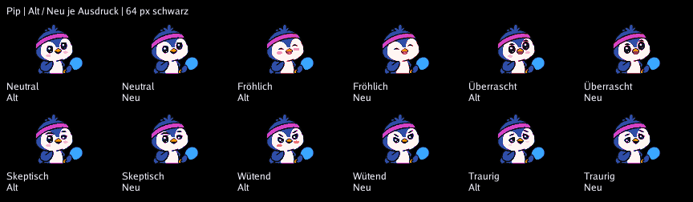
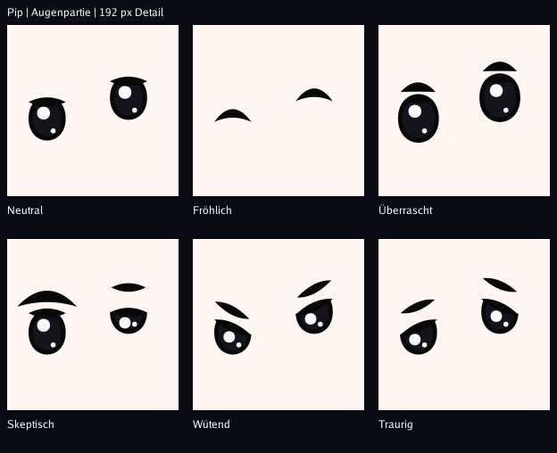
Messwert: 99 Pixel bei Neutral/Wütend, Ziel 114 nicht erreicht. Gemäß Vorgabe wurden die Ausdrücke dafür nicht angepasst. Optische Abnahme und echter LED-Test bleiben offen.
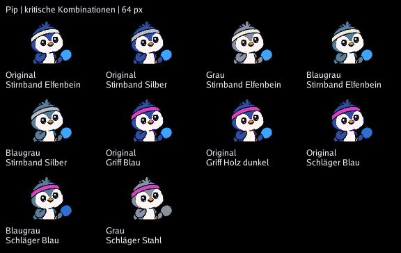
Besonders prüfen: Stahl auf Grau, blauer Griff auf Navy. Silber ist auf Grau ausgeschlossen; beim Farbwechsel fällt es auf Original-Pink zurück. Die Stirnband-Option Original ist immer Pink. LED-Abnahme offen.
64 px Originalgröße und 256 px Ansicht, jeweils über dieselbe Pipeline wie der Avatar-Endpunkt.
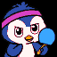
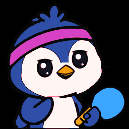
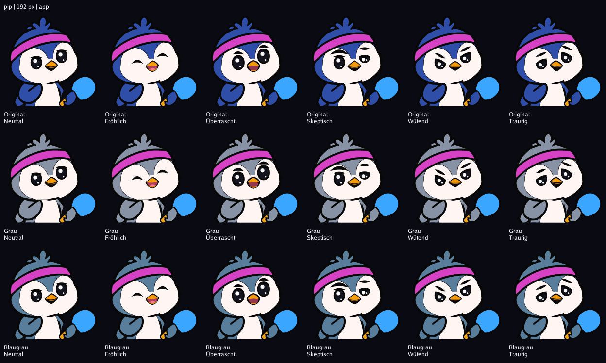
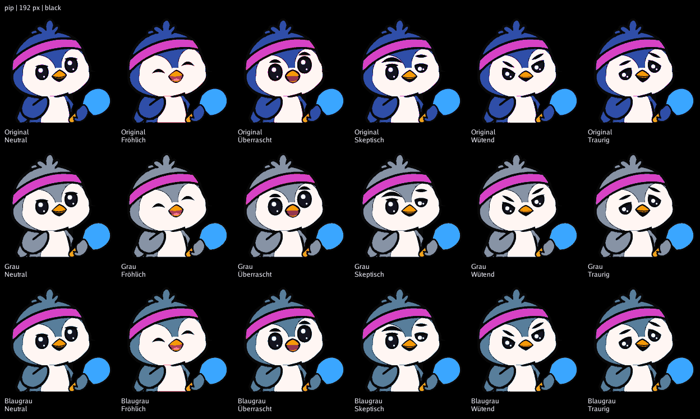
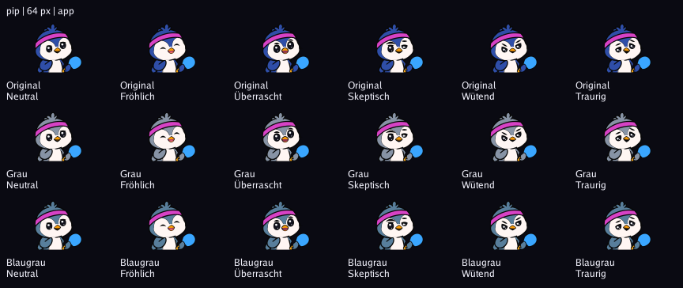
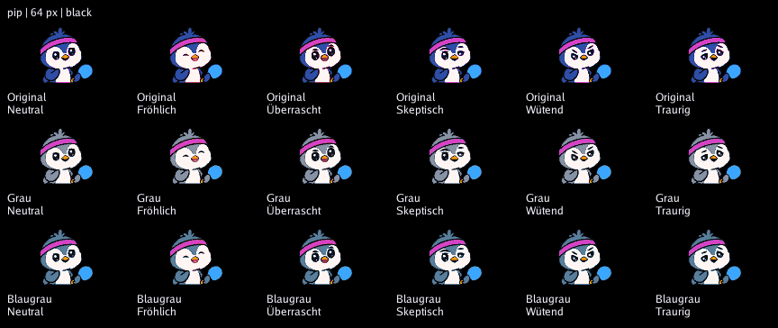
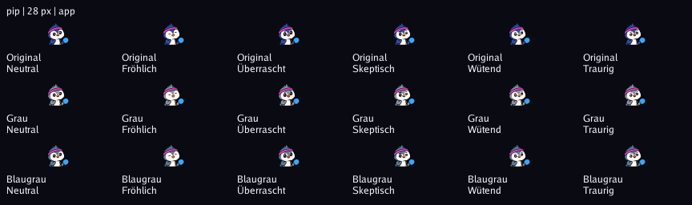
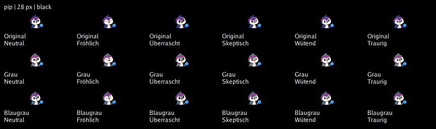
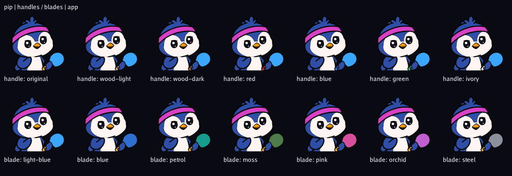
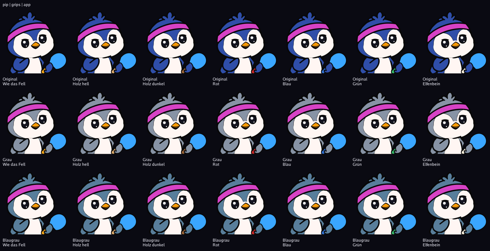
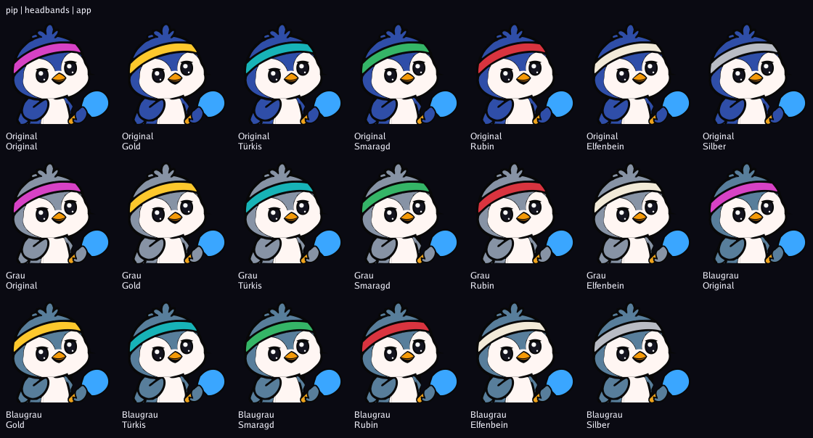
Offen: optische Abnahme und Prüfung am echten LED-Panel. Stirnbandfarben sind im Profileditor wählbar.